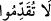
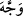
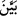
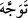
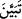

geçirmeyin, bir işe Allah ve Rasûlü hüküm ve izin vermeden karar vermeyin. Bu hususa
riayet ettiğiniz takdirde nâzil olan vahiyle amel etmiş ve gönderilen Nebî’ye iktidâ
etmiş olursunuz.
Âyette geçen “iki el” kelimesi, insanın iki eli istikametinde bulunan iki yön demektir.
“İki elin arası” ifadesi ise iki yönün arası demektir ki, bu ön taraf anlamına gelir. “İki
elinin arasına oturdum” mânâsını ifade eden ibâre, önüne ya da ellerinin hizasında bir
mekâna ya da o kimseye yakın bir yere oturdum, demektir.
“Allah’ın önü” denildiğinde cihet ve mekân kasdedilmez. Dolayısıyla bu ifâde istiâre-
i temsîliyye olur. Dînî hususlarda Allah ve Rasûlü hüküm vermeden karar veren bazı
sahâbîlerin durumu, tâzim gösterilmesi, arkasından yürünüp izinin tâkîb edilmesi
gereken bir kimsenin önünden yürüyerek edepsizlik yapan kişinin hâline benzetilmiştir.
“Benzeyen”in hâli “benzetilen”in hâli ile anlatılmıştır.
Yaptığınız ve terk ettiğiniz her söz ve davranışta “Allah’tan korkun. Şüphesiz Allah”
sizin sözlerinizi “işitendir, bilendir.”
Allah Teâlâ sözlerinizi işiten ve yaptıklarınızı bilendir. Dolaysıyla takvâ ve murâkabe
onun hakkıdır. Âyetteki (__WORD__) “Öne geçmeyin” ifâdesinden bilumum öne geçme işini
yapmayınız, mânâsı kasdedilmiş olabilir. Bu durumda fiil, müteaddî olsa da mef’ûle
tealluku gözetilmemiş olur. Ebussuûd Efendi der ki: “Zikrolunan anlam bu makâma
daha uygundur. Çünkü bir fiili külliyen terk etmek, zorunlu olarak o fiilin bir mef’ûle
teallukunu da terk etmeyi gerektirir.”
“Takdîm”in, “tekaddüm” anlamında lâzım bir fiil olarak kullanımı câiz görülmüştür.
Zira “mukaddimetü’l-ceyş” ifadesiyle ordunun önde giden kısmı kastedilir. Benzeri bir
kullanım (__WORD__) ve (__WORD__) fiillerinde de vardır. Birincisi müteaddi olup “yönlendirdi”
anlamında iken lâzım olarak kullanılıp (__WORD__) yani “yöneldi” anlamına gelir. Aynı şekilde
ikincisi de “açıkladı” yerine (__WORD__) yani “açık oldu” anlamını ifade edebilir.
Hülasa, âyette “tekaddüm” yani öne geçmek yasaklanmıştır. Çünkü bir kimsenin önüne
geçmek ona tâbî olmaktan çıkıp başına buyruk hareket etmek anlamına gelir ve
dolayısıyla Allah ve Rasûlü’nün önüne geçmek, îmâna aykırı olmuş olur.
Mücâhid ve Hasan demişlerdir ki; âyet kurban bayramında namazdan önce kurban
kesmeyi yasaklama husûsunda nazil olmuştur. Âyette sanki şöyle denilmektedir: Nebi
(s.a.) kurban kesmeden önce siz kesmeyin! Çünkü bâzı kimseler, Efendimiz (s.a.)
bayram namazını kılmadan önce kurbanlarını kesmişler, Hz. Peygamber (s.a.) de iâde
etmelerini emir buyurmuştu. Bizim mezhebimiz böyledir. Ancak zevâl vaktine kadar
namaz kılınmamışsa bu vakitten itibaren kesilebilir. İmam Şâfii’ye göre ise vakit
girdikten sonra namaz kılacak kadar bir süre geçmişse kurban kesilebilir. Berâ (r.a.)’ten
rivâyet olunduğuna göre şöyle demiştir: “Peygamber (s.a.) kurban bayramı günü hutbe
okudu ve şöyle dedi: Bugün ilk yapacağımız iş namaz kılmaktır. Sonra gidip kurban
keseriz. Kim böyle yaparsa sünnetimize uymuş olur. Kim de namazımızdan önce
keserse bu kestiği âilesine kurban bayramından önce kestiği bir etlik mesâbesindedir.